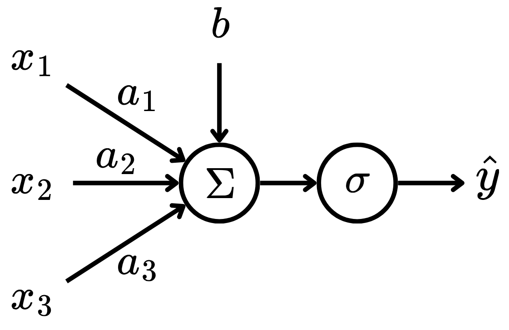
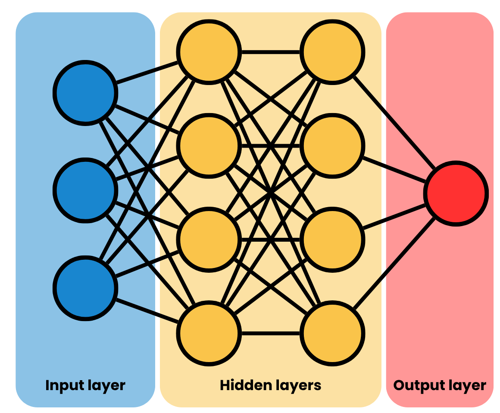

import torch
import torch.nn as nn
import torch.optim as optim
from torchvision import datasets, transforms
from torch.utils.data import DataLoader
from sklearn.metrics import classification_report, confusion_matrix
import seaborn as sns
import numpy as np
import matplotlib.pyplot as pltMultilayer Perceptron (MLP)
Here, the basis of Neural Networks will be presented, focusing on Multilayer Perceptrons (MLPs).
Theory
Deep Learning (DL) is a subarea of Machine Learning (ML) that is based on models composed of Neural Networks (NNs) (LeCun, Bengio, and Hinton 2015). Here, the basis of NNs will be presented, focusing on Multilayer Perceptrons (MLPs).
NNs were inspired by biological neural networks (Prince 2023). The smallest part of a NN is a neuron, which was famously modeled as a perceptron. A perceptron is a function of the form: \[ \hat{y} = \sigma\left(b + \sum_{i=1}^n w_ix_i\right), \tag{1}\] where \(x_i\) are the inputs, \(w_i\) are the input coefficients, \(b\) is the bias, \(\sigma : \mathbb R \to \mathbb R\) is the activation function and \(\hat{y}\) is the output. Here, the variables \(w_i\) and \(b\) are referred as learnable parameters of the model.Therefore, the perceptron receives \(n\) input signals and calculates their affine combination, then passes this value as input to a non-linear function. This can be visualized in Fig. 1.

To make perceptrons more complex models, one can stack multiple perceptrons in layers, creating a Multilayer Perceptron (MLP). That is, a layer of a MLP is of the form: \[ \hat{\boldsymbol{y}} = \sigma\left(\boldsymbol{Wx} + \boldsymbol{b}\right), \tag{2}\] where \(\boldsymbol{x} \in \mathbb R^n\) is the input vector, \(\boldsymbol{W} \in \mathbb R^{m\times n}\) is the linear coefficient matrix, \(\boldsymbol{b} \in \mathbb R^m\) is the bias vector and \(\boldsymbol{\hat{y}} \in \mathbb R^m\) is the output vector. Here, the hyperparameter \(m\) is the number of neurons – or perceptrons – in the given layer. The rows of the learnable parameters \(\boldsymbol{W}\) and \(\boldsymbol{b}\) play the same role as in Eq. 1, that is: \[ \begin{bmatrix} \hat{y}_1 \\ \hat{y}_2 \\ \vdots \\ \hat{y}_m \end{bmatrix} = \sigma \left( \begin{bmatrix} w_{11} & w_{12} & \cdots & w_{1n} \\ w_{21} & w_{22} & \cdots & w_{2n} \\ \vdots & \vdots & \ddots & \vdots \\ w_{m1} & w_{m2} & \cdots & w_{mn} \end{bmatrix} \begin{bmatrix} x_1 \\ x_2 \\ \vdots \\ x_n \end{bmatrix} + \begin{bmatrix} b_1 \\ b_2 \\ \vdots \\ b_m \end{bmatrix} \right). \tag{3}\] Note that the activation function \(\sigma : \mathbb R^m \to \mathbb R^m\) is now applied element-wise in the \(\boldsymbol{Wx} + \boldsymbol{b}\) vector.
In MLPs, layers of perceptrons are grouped sequentially in order to approximate a mapping from the input space \(\mathcal X\) to the output space \(\mathcal Y\), with the intermediate layers of the model being called hidden layers. That is, given a dataset \(\mathcal D = \{(\boldsymbol x_i, \boldsymbol y_i)\}_{i=1}^N\) with \(N\) observations, the input vector \(\boldsymbol x_i \in \mathcal X\) is processed by the MLP layers until the final layer, which should yield a vector \(\boldsymbol{\hat{y}}_i \approx \boldsymbol y_i \in \mathcal Y\). Fig. 2 depicts the diagram of a MLP.

As any other ML model, the MLP has some hyperparameters, which need to be carefully tuned. The most notable ones are:
- Number of hidden layers;
- Number of neurons per hidden layer;
- Activation function.
To train a MLP, one needs a dataset \(\mathcal D = \{\boldsymbol x_i, \boldsymbol y_i\}_{i=1}^N\) of observations – this approach is called Supervised Learning. With that, given a loss function \(\mathcal L : \mathcal Y^2 \to \mathbb R\) that measures how close the prediction \(\boldsymbol{\hat{y}}_i\) is to the observation \(\boldsymbol y\), one updates the learnable parameters of the model – the \(\boldsymbol W\) and \(\boldsymbol b\) from Eq. 2 using backpropagation. This is an algorithm of the form: \[ \boldsymbol \Theta^{(i + 1)} = \boldsymbol \Theta^{(i)} - \eta \nabla_{\boldsymbol \Theta^{(i)}} \mathcal L. \tag{4}\] That is, in a sequence of iterations, the learnable parameters of the model in the \(i\)-iteration \(\boldsymbol \Theta^{(i)}\) are updated using the the gradient of the loss function with respect to the learnable parameters of the MLP \(\eta \nabla_{\boldsymbol \Theta^{(i)}} \mathcal L\), considering a step size of \(\eta \in \mathbb R^+\).
Code
References
LeCun, Yann, Yoshua Bengio, and Geoffrey Hinton. 2015. Deep Learning. Nature. Vol. 521. 7553. Nature Publishing Group UK London.
Prince, Simon JD. 2023. Understanding Deep Learning. MIT press.